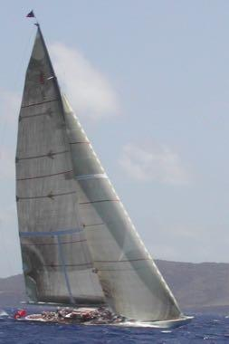
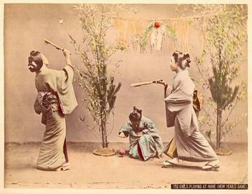
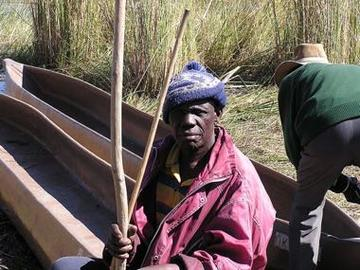
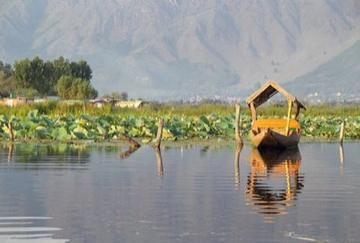
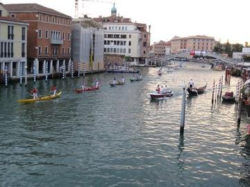

Classical Worlds 1

Crossroads and Golden Ages 3


Ogooué river pirogue journey
Gabon · Racing
Age of Contact and Craft 28

Antigua Classic Yacht Race
Antigua and Barbuda +1 · Racing


Basotho pony mountain race
Lesotho · Racing



Hanetsuki
Japan · Racing
Independence-day field games
Indonesia · Racing


Letter Categories
Germany +3 · Racing

Mokoro polling
Botswana · Racing
Ngalawa outrigger sailing
Comoros · Racing
Nile Felucca Sailing
Egypt · Racing

Pacu jawi
Indonesia · Racing
Partner-Carry Obstacle Race
Finland · Racing


Shikara paddle race
India · Racing

Thung chai basket-boat spinning
Vietnam · Racing
Venetian lagoon regatta
Italy · RacingTombola
Italy +1 · Racing
Modern Heritage 3


Harbour Street Circuit Time Trial
Monaco · Racing
Pesapallo
Finland · Racing